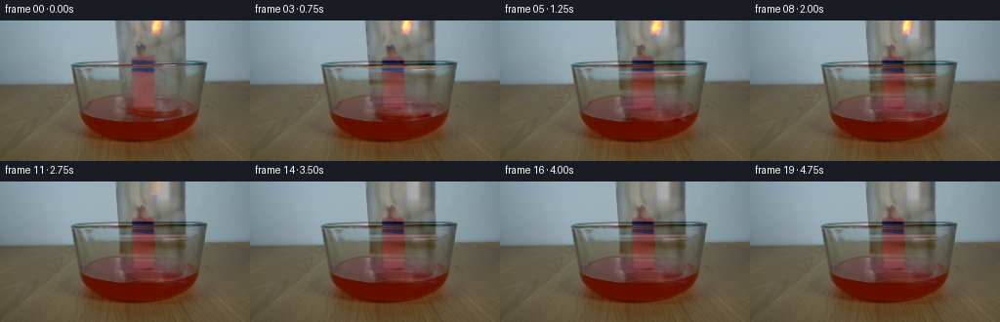
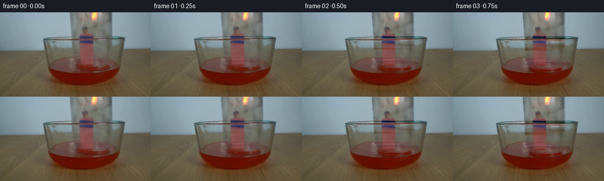
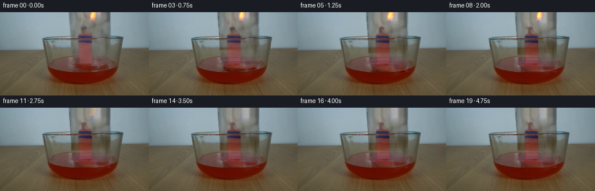
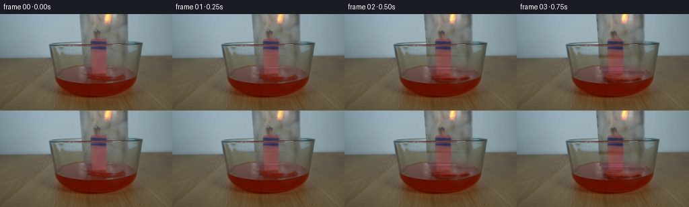

CODING AGENTS AS PIXEL WORLD MODELS
traex/GPT-6.1-Sol · 0164
点击播放 · 原生 RGB 像素
逐轮保存的候选
回放视频、检查图与代码变化。
每份候选均可单独播放。实际图片检查记录在下方工具轨迹中。
候选 01播放与检查图
点击播放 · 原生 RGB 像素


展开代码变化
--- 上一保存版本
+++ 本次保存版本
@@ -0,0 +1,130 @@
+from pathlib import Path
+import numpy as np
+from PIL import Image
+import cv2
+from scipy.ndimage import gaussian_filter
+import artifact_io
+
+ROOT=Path(__file__).resolve().parent
+H,W=144,256
+Y,X=np.mgrid[:H,:W].astype(np.float32)
+
+def smooth(a,b,z):
+ v=np.clip((z-a)/(b-a),0,1)
+ return v*v*(3-2*v)
+
+def soft_polygon(points, blur=.65):
+ m=np.zeros((H,W),np.float32)
+ cv2.fillPoly(m,[np.array(points,np.int32)],1)
+ return gaussian_filter(m,blur)
+
+def remap(a, sx, sy):
+ return cv2.remap(a.astype(np.float32),sx.astype(np.float32),sy.astype(np.float32),cv2.INTER_LINEAR,borderMode=cv2.BORDER_REPLICATE)
+
+def build():
+ src=np.array(Image.open(ROOT/'first_frame.png').convert('RGB'))
+ image=src.astype(np.float32)
+ # Reconstruct the undisturbed wall and tabletop beneath the moving glass.
+ # The vessel is translucent: its original optical detail is retained as a
+ # transmission layer rather than replacing it by an opaque drawn object.
+ clear=image.copy()
+ for y in range(105):
+ left=image[y,111:118].mean(0)
+ right=image[y,193:201].mean(0)
+ if y>=39:
+ # The fixed bowl's lip and water are behind the descending vessel.
+ left=image[y,104:113].mean(0)
+ right=image[y,194:202].mean(0)
+ u=np.clip((np.arange(W)-118)/73,0,1)
+ row=left[None,:]*(1-u[:,None])+right[None,:]*u[:,None]
+ # A small original sensor texture keeps the restored area photographic.
+ detail=image[y]-gaussian_filter(image,1.3)[y]
+ clear[y,118:193]=row[118:193]+detail[118:193]*.22
+ jar=soft_polygon([(118,-35),(189,-35),(190,39),(192,72),(190,90),
+ (181,98),(161,103),(140,100),(126,93),(123,81),(122,41)],.7)
+ # Mouth/near wall are naturally hidden by the front of the bowl.
+ jar*=1-smooth(101,105,Y)
+ under=image*(1-jar[...,None])+clear*jar[...,None]
+ # The bundle stays rooted in the bowl. Preserve the original fine strands,
+ # burnt heads, binding, and reddish reflected light independently of glass.
+ bundle=soft_polygon([(139,24),(147,24),(152,34),(157,39),(158,86),
+ (155,92),(135,92),(134,40),(137,34)],.85)
+ # Estimate smooth transmission from either side of the stationary bundle.
+ optical=(image-under)*jar[...,None]
+ for y in range(24,94):
+ l=optical[y,130:135].mean(0)
+ r=optical[y,159:164].mean(0)
+ q=np.clip((np.arange(W)-133)/27,0,1)
+ est=l[None,:]*(1-q[:,None])+r[None,:]*q[:,None]
+ optical[y]=optical[y]*(1-bundle[y,:,None])+est*bundle[y,:,None]
+ under=under*(1-bundle[...,None])+(image-optical)*bundle[...,None]
+ # Separate the small luminous flame from the glass reflections around it.
+ fm=((X>152)&(X<168)&(Y<17)&((image[:,:,0]-image[:,:,1]>12)|(image[:,:,0]>183))).astype(np.uint8)
+ fm=cv2.dilate(fm,np.ones((3,3),np.uint8),iterations=1)
+ fm[:,:151]=0;fm[:,169:]=0;fm[18:]=0
+ nofire=cv2.inpaint(src,fm*255,4,cv2.INPAINT_TELEA).astype(np.float32)
+ fire=(image-nofire)*gaussian_filter(fm.astype(np.float32),.35)[...,None]
+ optical-=fire
+ # Fine neutral texture is optical, while the flame is self-luminous.
+ base=under
+ frames=[src.copy()]
+ for i in range(1,20):
+ t=i/4
+ # Constant real-time sampling of a controlled lowering, then rest.
+ drop=13.5*smooth(0,1.8,t)
+ dx=-.65*np.sin(np.pi*min(t/1.8,1))
+ glass=remap(optical,X-dx,Y-drop)
+ vis=remap(jar,X-dx,Y-drop)
+ # Source texture is already premultiplied. Keep the bowl's foreground
+ # in front of the vessel's submerged mouth.
+ front=1-smooth(101,105,Y)
+ out=base+glass*front[...,None]
+ # The exposed place vacated by the lower optical rim is filled by the
+ # unchanged bowl; preserve the glass' original central reflection.
+ # Flicker becomes smaller once the mouth seals against the liquid.
+ burn=1-smooth(2.15,3.05,t)
+ flick=1+.10*np.sin(17*t)+.055*np.sin(29*t+.7)
+ scale=max(.045,burn*(1+.095*np.sin(19*t)))
+ xmid=160+.62*np.sin(13*t)+.20*np.sin(27*t)
+ fw=.98+.11*np.sin(21*t+.4)
+ firewarp=remap(fire,(X-xmid)/fw+160,(Y-14)/scale+14)
+ firewarp*=((Y<=14)&(X>148)&(X<173))[...,None]
+ out+=firewarp*burn*flick
+ # Warm local illumination diminishes with the flame instead of making
+ # the whole fixed scene change exposure.
+ warm=np.exp(-((X-155)/17)**2-((Y-20)/28)**2)
+ out+=warm[...,None]*np.array([2.,.4,-.4])*((burn*flick)-1)
+ # An optical meniscus at the jar mouth, barely a pixel wide, settles as
+ # the jar reaches the red liquid. Its oval is partially occluded.
+ settle=smooth(.5,1.8,t)
+ cy=91.5+drop
+ ellipse=((X-(156+dx))/33.7)**2+((Y-cy)/5.0)**2
+ rim=np.exp(-((ellipse-1)/.16)**2)*settle*.15*front
+ out=out*(1-rim[...,None])+np.array([150,151,140])*rim[...,None]
+ # Low-amplitude circular ripples from entry, confined to the red surface.
+ rt=max(0,t-.9)
+ redmask=smooth(14,36,image[:,:,0]-image[:,:,1])
+ water=redmask*soft_polygon([(83,92),(104,82),(129,80),(160,80),(188,86),
+ (204,97),(194,106),(157,110),(116,106),(89,99)],1.4)
+ rr=np.sqrt(((X-157)/1.65)**2+((Y-97)*2.0)**2)
+ wave=np.sin(rr*.8-rt*9)*np.exp(-((rr-rt*13)/13)**2)*np.exp(-rt*1.25)
+ out+=water[...,None]*wave[...,None]*np.array([1.65,.8,.5])*smooth(.9,1.3,t)
+ # Cooling draws a little red water into the sealed glass (no large jump).
+ rise=3.2*smooth(3.05,4.75,t)
+ internal=((X>127)&(X<185)).astype(np.float32)
+ internal=gaussian_filter(internal,.85)
+ waterline=100-rise+2.1*((X-156)/30)**2
+ lift=smooth(waterline-.8,waterline+.8,Y)*(1-smooth(101.5,103.5,Y))*internal*smooth(3.05,4.4,t)*.35
+ out=out*(1-lift[...,None])+np.array([101.,39.,25.])*lift[...,None]
+ # Brief, subtle wisps after the last flame die out inside the jar.
+ smokeamp=smooth(2.8,3.2,t)*(1-smooth(3.65,4.7,t))
+ sy=14-6*(t-3)
+ sm=np.exp(-((X-160-1.4*np.sin((Y+7*t)/4))/2.5)**2-((Y-sy)/13)**2)*smokeamp*.065
+ sm*=((Y<24)&(Y>0))
+ out=out*(1-sm[...,None])+np.array([155,158,153])*sm[...,None]
+ frames.append(np.uint8(np.clip(out,0,255)))
+ return np.stack(frames)
+
+if __name__=='__main__':
+ frames=build()
+ artifact_io.save(frames,ROOT)
候选 02播放与检查图
点击播放 · 原生 RGB 像素

展开代码变化
--- 上一保存版本
+++ 本次保存版本
@@ -65,8 +65,23 @@
nofire=cv2.inpaint(src,fm*255,4,cv2.INPAINT_TELEA).astype(np.float32)
fire=(image-nofire)*gaussian_filter(fm.astype(np.float32),.35)[...,None]
optical-=fire
+ # The long horizontal oval at y=44 is the bowl's lip, not a mark
+ # travelling down the glass. Interpolate transmission across that lip.
+ for y in range(39,55):
+ q=(y-38)/17
+ trans=optical[38]*(1-q)+optical[55]*q
+ optical[y]=trans
+ # Keep the fixed bowl surface stationary while translating only the
+ # neutral transmission and the side-wall detail close to the liquid.
+ center=(smooth(122,134,X)*(1-smooth(180,190,X)))
+ for y in range(77,104):
+ q=smooth(76,87,float(y))
+ edge_trans=optical[y].copy()
+ # Surface color is not an opaque pigment attached to the glass.
+ neutral=np.mean(edge_trans,axis=-1,keepdims=True)
+ optical[y]=edge_trans*(1-center[y,:,None]*q*.7)+neutral*center[y,:,None]*q*.7
# Fine neutral texture is optical, while the flame is self-luminous.
- base=under
+ base=nofire-optical
frames=[src.copy()]
for i in range(1,20):
t=i/4
候选 03播放与检查图
点击播放 · 原生 RGB 像素


展开代码变化
--- 上一保存版本
+++ 本次保存版本
@@ -81,19 +81,20 @@
neutral=np.mean(edge_trans,axis=-1,keepdims=True)
optical[y]=edge_trans*(1-center[y,:,None]*q*.7)+neutral*center[y,:,None]*q*.7
# Fine neutral texture is optical, while the flame is self-luminous.
- base=nofire-optical
+ transmission=np.clip(nofire/np.maximum(nofire-optical,10),.58,1.30)
+ base=nofire/transmission
frames=[src.copy()]
for i in range(1,20):
t=i/4
# Constant real-time sampling of a controlled lowering, then rest.
drop=13.5*smooth(0,1.8,t)
dx=-.65*np.sin(np.pi*min(t/1.8,1))
- glass=remap(optical,X-dx,Y-drop)
+ glass=remap(transmission,X-dx,Y-drop)
vis=remap(jar,X-dx,Y-drop)
# Source texture is already premultiplied. Keep the bowl's foreground
# in front of the vessel's submerged mouth.
front=1-smooth(101,105,Y)
- out=base+glass*front[...,None]
+ out=base*(1+(glass-1)*front[...,None])
# The exposed place vacated by the lower optical rim is filled by the
# unchanged bowl; preserve the glass' original central reflection.
# Flicker becomes smaller once the mouth seals against the liquid.
候选 04播放与检查图
可观测工具轨迹
实际执行的命令与返回图片。
命令 1exit 0
/bin/bash -lc 'ls -la; cat prompt.txt; cat GENERATION_RULES.md'
命令 2exit 0
/bin/bash -lc "cat artifact_io.py; python - <<'PY'
from PIL import Image
import numpy as np
im=np.array(Image.open('first_frame.png').convert('RGB')); print(im.shape)
# ASCII nearest palette
cols=np.array([[230,230,230],[150,150,150],[50,50,50],[200,70,60],[120,40,35],[240,170,60],[70,100,145],[130,105,85],[30,30,40],[245,230,155]])
chars=' .#RrFBS@Y'
a=np.array(Image.fromarray(im).resize((96,54))).astype(float)
d=((a[:,:,None]-cols)**2).sum(-1); idx=d.argmin(-1)
for row in idx:print(''.join(chars[k] for k in row))
print('samples:')
for y in range(0,144,8):
print(y,[(x,tuple(im[y,x])) for x in range(0,256,16)])
PY"命令 3exit 0
/bin/bash -lc "python - <<'PY'
import numpy as np
from PIL import Image
im=np.array(Image.open('first_frame.png')); a=np.array(Image.fromarray(im).resize((128,72))).astype(float)
chars=' .,:;irsXA253hMHGS#9B&@'
l=a.mean(-1); print('luminance');
for row in l: print(''.join(chars[int(v/256*len(chars))] for v in row))
# full crop direct color classification with grey range
print('crop x110..200 y0..100 every 1x2')
a=im[:100:2,110:200].astype(float)
for row in a:
s=''
for r,g,b in row:
if r>190 and r>g*1.05: c='F' if g<200 else 'Y'
elif g-r>8 and b-r>13:c='.'
elif r-g>22: c='r' if r<140 else 'R'
else:c='0123456789'[min(9,int((r+g+b)/3/20))]
s+=c
print(s)
PY"命令 4exit 0
/bin/bash -lc "python - <<'PY'
from PIL import Image
import numpy as np
im=np.array(Image.open('first_frame.png')).astype(int)
for y in [0,5,10,15,20,25,30,35,40,45,50,55,60,65,70,75,80,85,90,95,100]:
print('\\ny',y)
print(' '.join(f'{x}:{im[y,x,0]},{im[y,x,1]},{im[y,x,2]}' for x in range(116,193,3)))
# edge map
from scipy.ndimage import sobel
lum=im.mean(-1); g=np.hypot(sobel(lum,axis=0),sobel(lum,axis=1))
a=np.array(Image.fromarray(g.astype('float32')).resize((128,72)))
print('edges')
for row in a:print(''.join(' .:ox#'[min(5,int(v/40))] for v in row))
PY"命令 5exit 0
/bin/bash -lc "python - <<'PY'
import numpy as np
from PIL import Image
im=np.array(Image.open('first_frame.png')).astype(float)
# gray crop without resize, color is intensity
for ya,yb,xa,xb in [(0,63,112,196),(62,105,100,198)]:
print(f'crop {xa}-{xb},{ya}-{yb}')
chars=' .,:;irsXA253hMHG'
for y in range(ya,yb):
a=im[y,xa:xb]; lum=a.mean(-1)
print(f'{y:3}', ''.join(chars[min(len(chars)-1,int(v/180*len(chars)))] for v in lum))
# special highlights
print('row jar bottom gradient against smooth background')
for y in range(10,103,2):
print(y, ' '.join(f'{x}:{im[y,x].mean():.0f}' for x in [115,118,120,122,125,128,130,132,159,161,164,170,175,182,186,190,192,196]))
PY"命令 6exit 0
/bin/bash -lc "python - <<'PY'
from PIL import Image
import numpy as np
im=np.array(Image.open('first_frame.png')).astype(int)
# vertical scan center and transitions at edge
for x in [121,125,135,140,150,155,160,168,178,185,189]:
print('x',x,[(y,tuple(im[y,x])) for y in range(0,110,5)])
PY"命令 7exit 0
/bin/bash -lc "python - <<'PY' import importlib.util for m in ['numpy','PIL','scipy','cv2']:print(m, bool(importlib.util.find_spec(m))) PY"
命令 8exit 0
/bin/bash -lc "python - <<'PY'
import numpy as np
from PIL import Image
im=np.array(Image.open('first_frame.png')).astype(float)
chars=' .,:;+*x#@'
print('redness x72-212, y72-124')
for y in range(72,125):
print(f'{y:3} '+''.join(chars[int(np.clip((r-g)/100,0,.99)*10)] for r,g,b in im[y,72:213]))
PY"命令 9exit 0
/bin/bash -lc "cat > generate.py <<'PY'
from pathlib import Path
import numpy as np
from PIL import Image
import cv2
from scipy.ndimage import gaussian_filter
import artifact_io
ROOT=Path(__file__).resolve().parent
H,W=144,256
Y,X=np.mgrid[:H,:W].astype(np.float32)
def smooth(a,b,z):
v=np.clip((z-a)/(b-a),0,1)
return v*v*(3-2*v)
def soft_polygon(points, blur=.65):
m=np.zeros((H,W),np.float32)
cv2.fillPoly(m,[np.array(points,np.int32)],1)
return gaussian_filter(m,blur)
def remap(a, sx, sy):
return cv2.remap(a.astype(np.float32),sx.astype(np.float32),sy.astype(np.float32),cv2.INTER_LINEAR,borderMode=cv2.BORDER_REPLICATE)
def build():
src=np.array(Image.open(ROOT/'first_frame.png').convert('RGB'))
image=src.astype(np.float32)
# Reconstruct the undisturbed wall and tabletop beneath the moving glass.
# The vessel is translucent: its original optical detail is retained as a
# transmission layer rather than replacing it by an opaque drawn object.
clear=image.copy()
for y in range(105):
left=image[y,111:118].mean(0)
right=image[y,193:201].mean(0)
if y>=39:
# The fixed bowl's lip and water are behind the descending vessel.
left=image[y,104:113].mean(0)
right=image[y,194:202].mean(0)
u=np.clip((np.arange(W)-118)/73,0,1)
row=left[None,:]*(1-u[:,None])+right[None,:]*u[:,None]
# A small original sensor texture keeps the restored area photographic.
detail=image[y]-gaussian_filter(image,1.3)[y]
clear[y,118:193]=row[118:193]+detail[118:193]*.22
jar=soft_polygon([(118,-35),(189,-35),(190,39),(192,72),(190,90),
(181,98),(161,103),(140,100),(126,93),(123,81),(122,41)],.7)
# Mouth/near wall are naturally hidden by the front of the bowl.
jar*=1-smooth(101,105,Y)
under=image*(1-jar[...,None])+clear*jar[...,None]
# The bundle stays rooted in the bowl. Preserve the original fine strands,
# burnt heads, binding, and reddish reflected light independently of glass.
bundle=soft_polygon([(139,24),(147,24),(152,34),(157,39),(158,86),
(155,92),(135,92),(134,40),(137,34)],.85)
# Estimate smooth transmission from either side of the stationary bundle.
optical=(image-under)*jar[...,None]
for y in range(24,94):
l=optical[y,130:135].mean(0)
r=optical[y,159:164].mean(0)
q=np.clip((np.arange(W)-133)/27,0,1)
est=l[None,:]*(1-q[:,None])+r[None,:]*q[:,None]
optical[y]=optical[y]*(1-bundle[y,:,None])+est*bundle[y,:,None]
under=under*(1-bundle[...,None])+(image-optical)*bundle[...,None]
# Separate the small luminous flame from the glass reflections around it.
fm=((X>152)&(X<168)&(Y<17)&((image[:,:,0]-image[:,:,1]>12)|(image[:,:,0]>183))).astype(np.uint8)
fm=cv2.dilate(fm,np.ones((3,3),np.uint8),iterations=1)
fm[:,:151]=0;fm[:,169:]=0;fm[18:]=0
nofire=cv2.inpaint(src,fm*255,4,cv2.INPAINT_TELEA).astype(np.float32)
fire=(image-nofire)*gaussian_filter(fm.astype(np.float32),.35)[...,None]
optical-=fire
# Fine neutral texture is optical, while the flame is self-luminous.
base=under
frames=[src.copy()]
for i in range(1,20):
t=i/4
# Constant real-time sampling of a controlled lowering, then rest.
drop=13.5*smooth(0,1.8,t)
dx=-.65*np.sin(np.pi*min(t/1.8,1))
glass=remap(optical,X-dx,Y-drop)
vis=remap(jar,X-dx,Y-drop)
# Source texture is already premultiplied. Keep the bowl's foreground
# in front of the vessel's submerged mouth.
front=1-smooth(101,105,Y)
out=base+glass*front[...,None]
# The exposed place vacated by the lower optical rim is filled by the
# unchanged bowl; preserve the glass' original central reflection.
# Flicker becomes smaller once the mouth seals against the liquid.
burn=1-smooth(2.15,3.05,t)
flick=1+.10*np.sin(17*t)+.055*np.sin(29*t+.7)
scale=max(.045,burn*(1+.095*np.sin(19*t)))
xmid=160+.62*np.sin(13*t)+.20*np.sin(27*t)
fw=.98+.11*np.sin(21*t+.4)
firewarp=remap(fire,(X-xmid)/fw+160,(Y-14)/scale+14)
firewarp*=((Y<=14)&(X>148)&(X<173))[...,None]
out+=firewarp*burn*flick
# Warm local illumination diminishes with the flame instead of making
# the whole fixed scene change exposure.
warm=np.exp(-((X-155)/17)**2-((Y-20)/28)**2)
out+=warm[...,None]*np.array([2.,.4,-.4])*((burn*flick)-1)
# An optical meniscus at the jar mouth, barely a pixel wide, settles as
# the jar reaches the red liquid. Its oval is partially occluded.
settle=smooth(.5,1.8,t)
cy=91.5+drop
ellipse=((X-(156+dx))/33.7)**2+((Y-cy)/5.0)**2
rim=np.exp(-((ellipse-1)/.16)**2)*settle*.15*front
out=out*(1-rim[...,None])+np.array([150,151,140])*rim[...,None]
# Low-amplitude circular ripples from entry, confined to the red surface.
rt=max(0,t-.9)
redmask=smooth(14,36,image[:,:,0]-image[:,:,1])
water=redmask*soft_polygon([(83,92),(104,82),(129,80),(160,80),(188,86),
(204,97),(194,106),(157,110),(116,106),(89,99)],1.4)
rr=np.sqrt(((X-157)/1.65)**2+((Y-97)*2.0)**2)
wave=np.sin(rr*.8-rt*9)*np.exp(-((rr-rt*13)/13)**2)*np.exp(-rt*1.25)
out+=water[...,None]*wave[...,None]*np.array([1.65,.8,.5])*smooth(.9,1.3,t)
# Cooling draws a little red water into the sealed glass (no large jump).
rise=3.2*smooth(3.05,4.75,t)
internal=((X>127)&(X<185)).astype(np.float32)
internal=gaussian_filter(internal,.85)
waterline=100-rise+2.1*((X-156)/30)**2
lift=smooth(waterline-.8,waterline+.8,Y)*(1-smooth(101.5,103.5,Y))*internal*smooth(3.05,4.4,t)*.35
out=out*(1-lift[...,None])+np.array([101.,39.,25.])*lift[...,None]
# Brief, subtle wisps after the last flame die out inside the jar.
smokeamp=smooth(2.8,3.2,t)*(1-smooth(3.65,4.7,t))
sy=14-6*(t-3)
sm=np.exp(-((X-160-1.4*np.sin((Y+7*t)/4))/2.5)**2-((Y-sy)/13)**2)*smokeamp*.065
sm*=((Y<24)&(Y>0))
out=out*(1-sm[...,None])+np.array([155,158,153])*sm[...,None]
frames.append(np.uint8(np.clip(out,0,255)))
return np.stack(frames)
if __name__=='__main__':
frames=build()
artifact_io.save(frames,ROOT)
PY
python generate.py"命令 10exit 0
/bin/bash -lc "python - <<'PY'
import numpy as np
from PIL import Image
for i in [0,1,4,8,12,19]:
im=np.array(Image.open(f'frames/{i:02}.png')).astype(float)
a=np.array(Image.fromarray(im.astype('uint8')).resize((96,54))).astype(float)
pal=np.array([[160,177,185],[110,127,136],[90,85,70],[125,120,110],[75,65,65],[130,80,80],[100,25,7],[255,209,119],[135,140,140]])
chars='.bts#rRFg'
idx=((a[:,:,None]-pal)**2).sum(-1).argmin(-1)
print('\\nFRAME',i)
for row in idx:print(''.join(chars[k] for k in row))
PY"命令 11exit 0
/bin/bash -lc "python generate.py; python - <<'PY'
import numpy as np
from PIL import Image
s=np.array(Image.open('first_frame.png')).astype(float)
for i in [1,4,8,12,19]:
a=np.array(Image.open(f'frames/{i:02}.png')).astype(float)
print(i, 'MAE',abs(a-s).mean(),'minmax',a.min(),a.max(),'large diff',np.sum(abs(a-s).mean(-1)>40))
print('wall x150',[(y,tuple(a[y,150].astype(int))) for y in [0,15,25,35,44,50,60,70,85,95,100]])
print('flame',a[:17,152:168].max((0,1)))
# luminance crops
chars=' .,:;irsXA253hMHG'
for i in [0,1,8,19]:
a=np.array(Image.open(f'frames/{i:02}.png')).mean(-1)
print('Frame',i)
for y in range(0,110,2):
print(f'{y:3} '+''.join(chars[min(15,int(v/180*16))] for v in a[y,112:197]))
PY"命令 12exit 0
/bin/bash -lc "python generate.py; python - <<'PY'
from pathlib import Path
from PIL import Image
import numpy as np
from generate import build
f=build()
s=np.array(Image.open('first_frame.png').convert('RGB'))
assert f.dtype==np.uint8 and f.shape==(20,144,256,3)
assert np.array_equal(f[0],s)
for i in [1,4,8,12,19]:
print(i, 'mean RGB change',np.abs(f[i].astype(float)-s).mean().round(3), 'max',f[i].max(), 'lit pixels',np.sum((f[i,:, :,0]>205)&(f[i,:,:,1]>135)))
print('Output verified:',Path('pixels.npz').stat().st_size,'bytes;', len(list(Path('frames').glob('*.png'))),'frames')
PY"保存候选 4 份；完成命令 12 次；可验证图片返回 0 张。原始 API 响应与完整日志保留在本地。